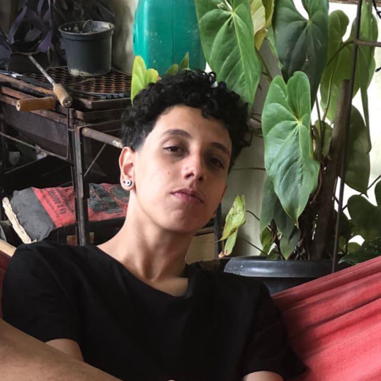

Seja bem vindo ao meu currículo e portfólio, Me chamo Luiz Gabriel tenho 18 Anos e moro em Belo Horizonte Minas Gerais.
Bem Vindo
Sobre
Meu Nome é Luiz Gabriel dos Santos Nogueira, Nasci no dia 30 de dezembro de 2002 em Belo Horizonte, Minas Gerais, Brasil. Atualmente com 18 anos.
Sou Estudante na área de programação, tenho em mente ter conhecimento tanto no Front-End e Back-End. Tenho práticas com HTML, CSS, JavaScript, Bootstrap e JSON.
Tenho conhecimento em softwares de controle de Versão (GIT) e de hospedagem de código. (GITHUB).

Primeiro Contato
O meu primeiro contato com a programação, foi no meu Curso Técnico do SENAI (Serviço Nacional de Aprendizagem Indústrial), Informática para Internet. Ainda estou Cursando e tenho previsão para terminar do final de dezembro de 2021.